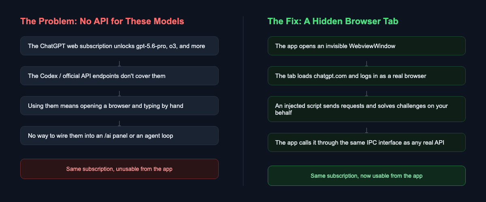
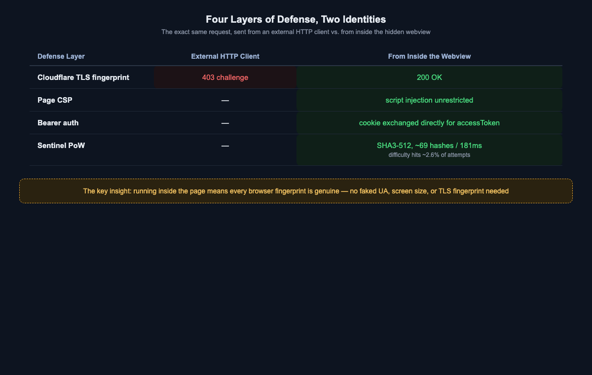
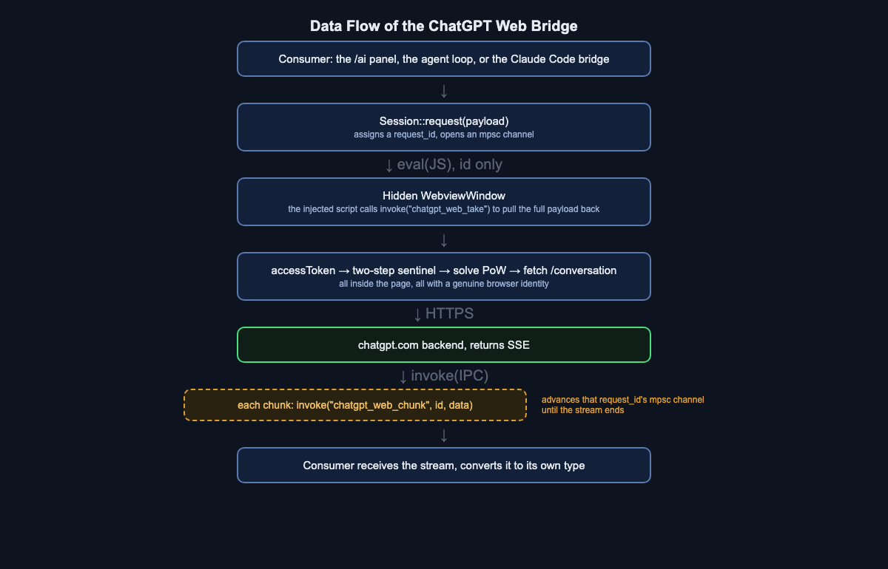
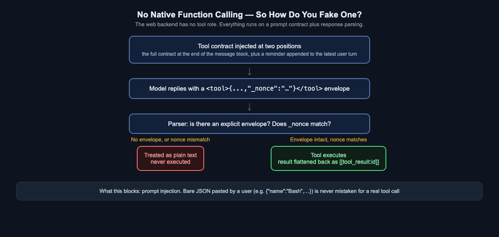

ChatGPT's Web App Has No API? So We Built a Bridge Inside the Browser
You paid for a ChatGPT subscription that unlocks models only the web app can see — and your own tools can't touch them. This is the story of how we turned a hidden browser tab into a callable service, and the four layers of anti-bot defense, one proof-of-work puzzle, and a fake-it-till-you-make-it tool-calling scheme we had to build along the way.
Here's a situation a lot of subscribers run into: you pay for ChatGPT, the web interface shows you models like gpt-5.6-pro and o3, and they work great in the browser. But try to wire one into your own tooling — a terminal AI assistant, an internal knowledge-base Q&A bot, an autonomous agent loop — and you'll find the officially published API endpoints don't line up with what the web app shows you. Same subscription, but part of it only exists inside a browser tab. It doesn't come out.
This isn't a bug — it's a deliberate product split. ChatGPT's web frontend talks to its own backend (/backend-api/conversation), a completely different path from the publicly documented Responses API (/backend-api/codex/responses, the Codex endpoint), each maintained and rate-limited on its own. Seeing a model in your browser doesn't mean you can call it from code.
Three risks worth naming up front
Before getting into how, there are three real costs to this approach, and we put all three, unedited, into the product's own risk disclosure:
- It violates OpenAI's Terms of Service. Driving a consumer web interface programmatically carries a real risk of account suspension.
- Tool calling is simulated. The web backend has no native function calling — it's held together with a prompt contract and response parsing, and it will never match the fidelity of a real API.
- The maintenance burden never goes away. The anti-bot proof-of-work scheme is something the community reverse-engineered. The moment OpenAI tweaks it, the whole path returns 403, and someone has to go chase the new implementation.
This piece isn't a how-to for bypassing anyone's protections — it's a record of an engineering process where a known risk was put in plain sight, the decision to build it anyway was made deliberately, and every technical choice along the way has a reason attached to it.

Why a browser tab, and not a fake browser
The obvious first move is to grab an HTTP client, copy every header, cookie, and User-Agent a real browser would send, and hit the API directly. We tried exactly that, and ran straight into Cloudflare's TLS fingerprinting: without the handshake characteristics of a genuine browser, the request never even reaches the application layer — it comes back as a 403 with cf-mitigated: challenge attached.
Working down the rest of the chain made the conclusion obvious: instead of assembling a fake browser inside Rust, just use a real one. Tauri already ships a WebviewWindow — an honest-to-god system browser component. Hide it (never show the window), let it load chatgpt.com and log in normally, and have every request fired by JavaScript running inside the page itself, not simulated from the Rust side.
That one choice wins the next three layers almost for free:

Running inside the page means every fingerprint the browser sends is genuine — real screen size, real core count, real TLS fingerprint, nothing faked. Compare that to server-side implementations of the same idea, which typically have to pick fake values from a hardcoded list to fill in a browser fingerprint — data that's fake enough to eventually mismatch whatever other telemetry OpenAI is cross-checking against.
Proof of work: a deliberately designed math quiz
Past authentication, there's one more gate: sentinel. Before every conversation request, the client has to round-trip two endpoints to get a seed and a difficulty, then compute, inside the browser, a hash whose hex prefix is at or below that difficulty threshold — conceptually a scaled-down version of the proof-of-work Bitcoin mining uses, except here it's SHA3-512, which isn't in the browser's native WebCrypto API, so it has to ship its own implementation (we locked that implementation's correctness down with the standard test vectors for "" and "abc", so it can't silently compute the wrong thing without anyone noticing).
In practice, difficulty lands around a six hex-digit prefix requirement, with roughly a 2.6% hit rate — meaning it takes only a few dozen hashes and a bit over a hundred milliseconds to solve. The point of this puzzle clearly isn't to stop real compute power; it's to raise the bar high enough that a script thrown together carelessly won't clear it, forcing you to actually run inside a genuine browser environment.
Once the proof of work is solved, three tokens (the sentinel token, the prepare token, and the proof token) are enough to hit the real conversation endpoint and get back a stream of Server-Sent Events. Testing with "count from 1 to 40" produced 21 chunks of roughly 500 bytes each, a 1295ms wait for the first chunk, and 3645ms total — a pace set entirely by the upstream, since the web app was never designed to stream token-by-token. The IPC layer forwarding those chunks is nowhere near the bottleneck.
How the data actually flows: a deliberate detour
With auth and proof-of-work solved, the next problem is wiring this hidden browser tab back into the app's other two consumers — the /ai panel and chat window, and the agent loop that speaks the Claude Code bridge protocol.

There's an easy wrong turn here. Since a chunk of text has to reach JavaScript inside the browser, why not just eval the whole payload straight into a JS string? Because a Claude Code system prompt routinely runs past thirty thousand characters, and the moment it contains a character that needs escaping, or crosses some length limit, the entire eval string blows up — usually with an error message that tells you almost nothing.
So the data flow is deliberately split in two: the Rust side only ever uses eval to send a request ID across. The injected script, on receiving that ID, calls back with invoke("chatgpt_web_take", { id }), pulling the full payload back through Tauri's native, structured IPC channel — a pull, not a push. The same ID is reused when the response streams back: each chunk is handed to Rust via invoke("chatgpt_web_chunk", { id, data }), routed to that request's own channel so concurrent requests never collide.
Why stateless
ChatGPT's web app natively supports maintaining a conversation thread (conversation_id plus parent_message_id), which in theory saves the bandwidth of re-uploading the whole history every time. We deliberately chose the opposite: every request opens a brand-new conversation, with the entire history flattened into one long user message.
The reasoning is straightforward: maintaining state doesn't buy anything that actually matters. The model still sees the full history either way, and the max_tokens ceiling is exactly where it was — the only thing state saves is bandwidth, not context space. Meanwhile, a Claude Code request is never a straight line — it compacts history, edits past messages, retries on failure, and sometimes fans out into several parallel subagents at once. Force that shape onto ChatGPT's message tree, which expects precise parent-child relationships, and the smallest mismatch makes the context silently wrong — the worst failure mode there is, because the request still appears to succeed and nothing on the surface tells you the data has drifted. A stateless design has exactly one failure mode: hit the length ceiling, get back an explicit error — never a quietly corrupted answer.
No function calling — so how do you fake one?
If the only goal were chatting with a web-only model, everything up to this point would already be enough. But what AITerm actually needs to plug into are tool-calling scenarios — executing commands inside an agent loop, querying a knowledge base, wiring up MCP tools. The web backend has no structured role: "tool" at all; everything has to be forced through plain text.

The approach is to inject the full tool contract — the tool list, parameter schemas, output format requirements — right after the client's messages, and append a one-line reminder to the end of the latest user turn as well. This "two-position injection" wasn't a guess. Placing the contract only at the start of a large message block meant that, past roughly thirty thousand characters of prompt, the model would very likely just ignore it and reply that the tool "isn't in my tool set." Injecting it in both places is what made the success rate hold steady across test scenarios spanning thirty thousand to two hundred fifty thousand characters, thirty tools, and multi-turn tool history.
When the model replies according to the contract, it has to wrap the call in an explicit envelope, like <tool>{...}</tool>, with a fresh random _nonce generated per request embedded in the JSON. The parser only recognizes that explicit envelope — it never promotes bare JSON into a tool call. That check isn't guarding against the model; it's guarding against prompt injection: if content or code a user pastes happens to look like {"name":"Bash","arguments":{...}}, a parser without this check could mistake it for a genuine tool call and execute it. An envelope with a mismatched nonce is treated as plain text and never executed; a missing nonce with an otherwise intact envelope is tolerated as the model not fully following instructions.
Tool results have to be flattened back into the text history too, marked with their own dedicated delimiters:
[[tool_call:<name>#<id>]]
<arguments JSON>
[[/tool_call]]
[[tool_result:<id>]]
<result content>
[[/tool_result]]These delimiters are deliberately different from the <tool> envelope the model is asked to output. If both shared the same tags, the parser could mistake a turn we wrote into history ourselves for a new call the model just issued. In theory the nonce check would catch that too — history turns don't carry the current request's nonce — but correctness shouldn't be staked on two layers of probability when separating the tags removes the ambiguity at the source.
It has to be said plainly: this whole scheme will never match native function calling in fidelity. Over a long multi-turn agent loop, the odds of the model drifting from the contract format are higher than with native tool calling. That's an inherent limit of this transport, not a tradeoff that cleverer prompting can fully close.
Login only has to happen once
The last piece is the user experience: when should this hidden window ever show itself?
The answer is exactly one case — when /api/auth/session can't be exchanged for an accessToken. At that point the window is shown, the user logs in with their own credentials (or SSO), and while it's visible the app polls that same endpoint every two seconds; the instant a token comes back, the window hides itself. Skip that step and the window just sits there open with nobody managing it — and a user's natural instinct is to reach over and close it. "Close" and "hide" have very different consequences here: the webview is the transport layer, so close() destroys it and kills any request in flight, while hide() only affects visibility — the browser tab underneath stays alive.
That's also why this webview has to use the app's default data store, rather than a fresh isolated partition every time, the way some comparable implementations do for the convenience of extracting cookies. Persistence is exactly what we want here — during testing, this window was destroyed and rebuilt by the Rust side six separate times, and every single time /api/auth/session reported the user was already logged in. They only ever logged in once.
Was the trade worth it
Back to where this started: a subscription with part of its value trapped inside a browser tab. After all of this, the answer is yes — but only with the costs stated plainly.
Tool-call fidelity really is lower than a native API, context space is capped by whatever the account's actual plan allows (measured at roughly 34,834 tokens on the free tier), and the entire mechanism can break the moment upstream tweaks its verification logic. All of that is in the product's risk disclosure, visible the moment a user picks this provider. We're not pretending this is a stable, official path either — it shares the same subscription quota as the existing Codex provider; what it does is turn models that were locked inside a browser back into something a program can call.
The genuinely interesting engineering isn't "what got cracked" — it's that behind every decision that looks like a shortcut sits a dumber, more honest alternative that was deliberately passed over: flatten history rather than risk context silently drifting; inject the contract in two places rather than gamble that the model finds the rule on its own; accept lower tool-call fidelity rather than pretend it matches a native API. When a service isn't going to give you an API, the only real choice left is facing every limitation that decision creates honestly, rather than pretending they aren't there.
If you want to see this bridge running for real, check out AITerm: https://jamesju9999.github.io/aiterm-site/en.html
Found this useful? Clap (up to 50 times!) and follow for more on AI-assisted development, reverse engineering, and the tools quietly reshaping how people work with AI.